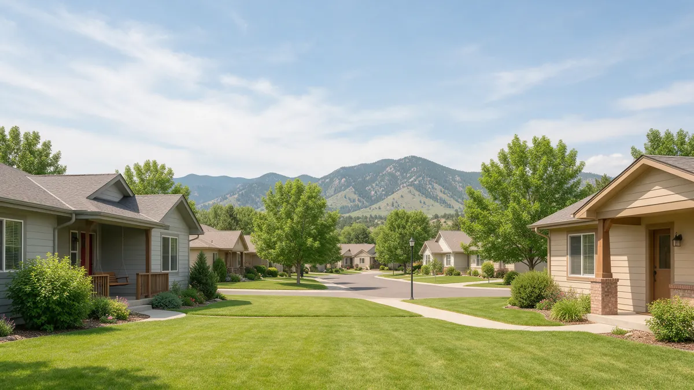

Westminster CO Plumber Handbook

Finding a plumber in Westminster CO is easier when you know what to tell them and what to expect. This handbook follows the order of a leak, from the first shutoff to prevention. Plumbing Pros Colorado is a referral line that connects you with independent local plumbers, who carry out the work. Westminster spans parts of Adams and Jefferson counties, so details like permits can vary by address.
The first moves
Locate the main shutoff and close it. Open a tap on the lowest floor to relieve pressure. If a pipe is spraying, wrap it temporarily with a rag and tape, but treat that as a stopgap only.
Lift valuables from the floor, mop up, and record the damage with your phone. If the leak is in a finished basement, pull back carpet edges so air can reach the pad.
- Close the main
- Relieve pressure
- Shield electrical items
- Dry out carpets and drywall
- Capture photos and notes
Where leaks hide in Westminster houses
Neighborhoods around Church Ranch, Hyland Hills and Semper include homes built across several decades, so the pipes are not all alike. Look for stains under bathrooms, rust on a water heater, damp spots in a laundry room, and a toilet that moves when you sit.
Homes from the late 1970s to early 1990s sometimes have polybutylene supply lines. If a plumber spots gray plastic pipe, ask about its condition and your options.
Westminster has many homes with finished basements and bonus rooms added by earlier owners. Ask the plumber to trace which lines feed the added bathroom or wet bar, because these additions are frequent leak points.
How a plumber tracks down the source
Start with the simple tests: meter movement with everything off, pressure at a hose bib, and a check of each fixture's shutoff. These steps split the problem into supply, drain or appliance.
Hidden leaks may need acoustic listening or thermal imaging. Little Dry Creek and Big Dry Creek corridors have groundwater that can mimic a plumbing leak, so a plumber may test pipes before blaming plumbing. A sewer camera follows if drains are involved.
Before the plumber arrives, locate recent paperwork, such as past repair notes, permit records or inspection reports. These documents reveal where pipe was replaced, and they can save time in tracing the problem.
Smart questions for the plumber
Where is the leak, and what is the pipe made of? Could the same problem be elsewhere in the house? What would you suggest if the wall opens and the pipe is worse than expected? Who handles drywall and paint afterward?
For work that needs a permit, ask which jurisdiction applies, since parts of the city lie in Adams County and others in Jefferson County. The plumber you are connected with is independent, so keep your agreement with them in writing.
Neighborhoods near Westminster Promenade and the downtown redevelopment have newer pipe than areas that date to the 1960s and 1970s. Tell the plumber the year of your home so they know what to expect behind the walls.
Repair or replace: what pushes the decision
Pinholes in copper that keep recurring, sections that have been patched several times, and visibly corroded joints point toward replacing a run. A single worn valve or fitting does not. Think also about future remodel plans, since opening walls once can save repeated disruption.
With sewer lines, a camera showing roots and cracks along several joints can justify lining or replacement rather than another cleaning. Ask the plumber to show you the footage.
If your home is on a hillside or has a daylight basement, ask about drainage as well as plumbing. Water outside the house can look like a leak inside, and the fix may involve grading or a downspout extension.
Keeping it from happening again
Test the main shutoff twice a year, flush the water heater as its manual advises, and swap old hoses. Walk the house after heavy storms along the Front Range and look for new stains.
In winter, disconnect hoses and close outdoor valves. Mature trees along older streets near Westminster's Downtown area can send roots to sewer lines, so slow drains deserve prompt attention.
Keep an eye on landscaping changes too. New sod, a fresh sprinkler line or a deck footing can damage a buried pipe, and the weeks after yard projects are when odd wet spots tend to appear.
When more than one contractor is involved, such as a flooring or drywall crew after the plumber, ask each to confirm that the plumbing work is finished and tested before they close up walls.
Frequently asked questions
What is polybutylene pipe and should I worry?
It is a gray plastic supply pipe used in some homes decades ago, and it has a history of failing at fittings. If you have it, a plumber can assess it. Whether to replace depends on its condition and your plans. Do not run the water or flush while a cleanout is open, since sewage can rise quickly.
Why does my water heater drip from the relief valve?
A dripping relief valve can mean excess pressure, a failing valve or a heater running too hot. Do not cap it. A plumber can test pressure and expansion and decide if the valve or the tank needs work. A cleanout gives the plumber direct access to clear and inspect the line, so knowing where yours is can save time.
Where would a sewer cleanout be in my house?
Look for a capped pipe, often white or black, near the foundation, in a basement floor or in a yard box. Not all homes have one. A plumber can locate it, and may suggest adding one for easier maintenance. If you hear a faint hiss behind a wall, note which wall, since the plumber can start there.
Is a pinhole leak in copper a quick fix?
A pinhole can sometimes be patched, but it is often a sign of wider thinning. Ask the plumber how the rest of the line looks and whether other pinholes are likely soon. Ask the plumber about thermal expansion if the relief valve drips only after hot water use.
Do I need a plumber for a washing machine leak?
If a hose burst, replace it and check the valves. If water comes from the drain standpipe or a wall box, call a plumber. Close the washer's supply valves when you go on a trip. Short-term patches like clamps are fine for emergencies but should be followed by a permanent repair.
Plumbing services in Westminster
- Water Leak Repair
- Emergency Plumbing
- Drain Cleaning
- Water Heater Services
- Sewer Line Repair
- Gas Line Services
- Slab Leak Repair
- Pipe Repair & Replacement
- Toilet Repair
- Bathroom Plumbing
Nearby Colorado cities
- Water leak repair in Lakewood
- Water leak repair in Golden
- Water leak repair in Conifer
- Water leak repair in Aurora
Ready to talk to someone? Call (720) 794-0974 or visit connect with a Westminster plumber.